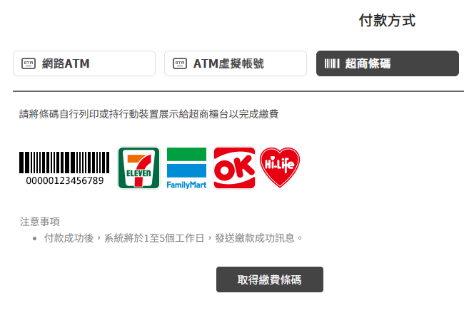

芙理日本代購-委託須知事項
委託價格如何計算?
皆使用
"價格計算機"計算委託價格呦~
可自行先確認價格合適，再來投單❤
代購流程
- 私訊芙理日本代購「商品連結/尺寸/顏色」（建議使用日文以減少誤解），如果是我方貼文分享之商品，截圖圈選即可。皆使用"價格計算機"計算委託價格，可自行先確認價格合適，再來投單。
- 等待我方確認商品規格與報價。
-
您將收到綠界的付款訂單連結，請依照報價填寫商品金額與付款資料。按下「前往付款」按鈕後有兩種付款方式提供選擇：
(1)選擇匯款，將提供專屬虛擬帳戶帳號
- 選擇「其他銀行」（綠界給的通常是土地銀行）入帳需等待 30 分鐘以上。
- 建議優先選用入帳快速的銀行（如台灣銀行、中信等，約 1 分鐘內入帳），有助於我方更快確認並下單。
(2)選擇超商付款，將提供超商繳費條碼
- 請務必保留繳費明細或收據並拍照回傳，收到後我方會儘快處理下單。
- 若未提供付款證明，我方可能會等到綠界實際入帳（約 3～5 日）後才安排下單。
請注意：如在付款前未告知商品規格錯誤，事後將無法以此為由要求退換或取消。

- 我方確認款項入帳後，將依照與您確認過的規格進行下單。
- 商品到達台灣後，我方會主動通知您安排二補。
- 您選擇二補方式後，我方寄出商品。
二補金額
包含刷卡手續費、日本國內運費(常見委託網站資訊可點此查看)、國際運費($0.28/g 計價)、包材費$3。
各項費用都是實報實銷，資料有建檔記錄，不會再多收隱藏費用。秤重都是精確到g的，並非kg。通知二補為方便作業是直接給您以上總額，如有疑慮，請在通知時反應。
貨到後二補方式：
- 開賣貨便貨到付款 + $10 手續費（如發生丟包，僅退賣貨便給的賠償金）
- 綠界付款(需負擔手續費) + 711純寄件（自選運費，費用依照711公告為準）
- 綠界付款(需負擔手續費) + 自帶711寄件編碼（請自行查詢教程）
商品到台時間
為了讓大家的國際運費可以省一點，會累積3公斤再統一運回台，所以集運頻繁程度跟當下的接單量成正比，最晚30天一定會安排從日本運一批回台。官方本身出貨也需要時間，以GRL買下來的情況舉例，最快也是下單4天後官方才開始出貨。如果剛好錯過前一梯次統一寄回台，就會需要等比較久。請大家耐心等候，我跟大家一樣都希望貨能趕快到台🥹
重大節慶(如過年、日本黃金周)物流不營業。過年前後(1月中~2月初)/日本黃金周(4月底~5月初)因貨物量大增，物流會有延遲的情形，可能會比平常延遲約7天的時間，再請大家耐心等候。如果有購買時效性的衣服(比如過年穿搭等等)，我方僅能以過往情形幫忙推估到手的大概時間，實際還是要看物流速度。委託即同意承擔物流延遲風險，事後無法已超過預期時長要求賠償或拒收。
特別須知
- 僅提供 711 寄件，超商單件 5 公斤限制，超過需拆成多件寄送。
- 如果想看群內有沒有同好也想下單該品牌，一起分日本境內運費，芙理可以幫大家在群內分享訊息~但需要在委託時主動跟芙理詢問、討論具體開團時間等等。若無提及都是默認單人委託，芙理收到款項後就會馬上下單的。
- 如果拜託芙理開團湊活動，芙理會先跟您討論成團條件。開團後只有達到成團條件芙理才會主動通知付款，反之沒達標的話芙理不會再額外詢問。所以真的不想錯過活動、只是想找看看有沒有其他人要一起買平攤省日本運費的委託人，要自己注意活動截止時間，主動跟我說要下單呦。
- 使用加厚快遞包裝袋寄件(可參考711交貨便寄件專用袋材質)，不提供全新紙箱寄件服務。如果一次購買多件且當下我方有多的二手紙箱，可能會幫忙替換成紙箱寄件。
- 商品到台後會發送二補訊息。商品到台後會在我方空間存放，室內常溫保存不負商品變質染色之責任。因各項原因使商品滯留在我方空間(比如①不回覆訊息/不下單/不繳費 ②委託複數商品，當下僅部分商品到台，想我方保管部分商品至全部商品到台後再寄 ③搬家出國等需要我方延後出貨):
超過 10 天酌收保管倉儲費 $50，之後每天增加 $10，最多保管 30 天。30天後即取消本次交易，前面金額不退，貨物由我方處理。
- メルカリ(mercari、煤爐)不接委託了。
- 某些日本網站會人工取消海外訂單，如遇到此情況，將再通知與退款，謝謝。
- 群組/貼文報價默認僅商品本身代購金額，不含二補金額。
- 「二補」、「國際運費」、「國運」代表上面所述的「二補金額」。
- sample品官方本身就無法退換貨，可能會有無標、缺飾品、拍攝或試穿造成之小瑕疵、未發售的原創商品、不同顏色的已售商品、已售完的商品等等。
- 如果是跟團長開團，會通融至最後成團才繳費，若最後棄單則直接掛黑單且永不接受委託。
- 開團的日本境內運費/手續費按件數均分。
- 第一次「二補」寄出後如未取，第二次寄貨需補$60人工處理費。第二次寄件僅能選擇先付款後寄貨。完成付款後我方會盡快出貨，不可再指定延後出貨時間。從通知付款後的15天內未付款，或是第二次寄件仍未取貨，或是超過30天內不回覆導致我方無法出貨(包括但不限於不提供寄件資訊、提供的711店家在交貨便顯示無法選擇)，則本次交易取消，前面金額不退，貨物由我方處理。
- 不再回覆二補大約要多少錢的估價，避免預估錯誤造成彼此不愉快。其中手續費、該批次國際配送包材重量、商品本身重量，都是到台後實報實銷。日本境內運費是商品販售網站收取的，請自行查看(有些常見委託網站資訊可點此)。可以詢問有無其他團員平分日本境內運費。
- 想要委託一口價(也就是商品+二補國際運費等等全額)，可以提出，芙理會報價給您。交易方式限定先付款並預留$20開賣貨便，且若賣貨便遺失包裹，僅賠償賣貨便給的賠款。若我方報價後才決定取消委託，這裡會將您列入拒絕往來戶，謝謝。
- 商品並不是裸寄來台的，會需要包材打包整箱運送呦~到台後會把商品單獨稱重去按比例分攤該批的總運費
- 代購僅為「代為購買」，如對商品有疑慮，請直接詢問該品牌客服。詢問我方不保證我的回覆一定跟商品真實情況相同，確定要委託該品項的話，事後不能以我方回覆與商品真實情況不符為由要求退貨
- 芙理代購的價格都可以使用計算機計算得知，所以請先確定該價格合適，再來投單。如無特殊情況(比如投單商品經我方評估後委託價格需調整)，我方報完價後無故取消，這邊會將您列為拒絕往來戶，謝謝。
- 商品皆是消費者下訂後，依照指定的尺寸、樣式、規格等從海外官網訂購而來，而非芙理的庫存，屬於「客製化給付」，沒有七日鑑賞期的適用。
- 服務項目僅為「代為購買」，商品到台時基本都會超過品牌本身提供的退換貨時間，因此有瑕疵受損缺件或官方寄錯，我方無法提供退換貨服務。委託即代表同意承擔該風險。
- 如果商品事前已知發售時間，可以在發售前就委託代搶。因搶購過程混亂(舉例:突然得知單筆最多只能下單1、結帳時才跳出商品已售完等)，因此無法條件指定選項保留服務(舉例:沒有搶到A，那就不要B、總數沒有買到2件，就不買等等)。委託代搶商品視為"一定要買到"，所以因包括但不限於上述描述原因，遇到需要拆單下訂，導致多負擔手續費運費等情形，芙理當下仍舊會下單，不會再次確認。
- 付款皆透過第三方支付平台"綠界"，每筆訂單綠界都會提供下單者不同的虛擬帳戶，我方也不會得知該號碼。如發生支付錯誤(包括但不限於帳戶填錯等等)，我方僅能協助詢問綠界處理，不會提供任何損失賠償。
- 委託含雜誌附錄包的商品時，請特別注意以下事項：
由於此類商品通常以「附錄」為主要購買目的，且雜誌本體本身重量較重、價值較低，預設在抵達日本倉庫後，倉庫端可能會為了減輕集運重量，自行去除雜誌本體，只保留附錄。此處理作業並非每件都能個別確認或指定處理方式，且倉庫方面亦無法保證一定能保留或一定會丟棄雜誌。因此，委託此類商品即視同同意此處理原則，以下為明確規則：
(1) 無法指定「一定要保留」或「一定要去除」雜誌本體。
(2) 事後不得以雜誌本體未附上為由要求補償或退費。
(3) 若雜誌未被丟棄，也不得以其「太重」為由拒絕支付國際運費或要求重新打包。
請在委託前務必理解並接受上述規則，如無法接受，建議避免委託此類商品。感謝您的理解與配合！
- dimmoire 為限量搶購品牌，因商品數量極少且發售方式特殊，請務必詳閱以下規則以確保雙方權益與順利購買流程：
* 限購限制與名額安排
dimmoire 每款商品限購 1 件，且會在兩個平台開賣（品牌官網與 acrotokyo），因此每款商品最多接受 2 位客人的委託。
* 排單原則與付款確認
委託需經由付款完成後才算正式排入購買名單。若您在我方回覆報價後一天內未完成付款或未回覆，我們將視同放棄，該機會會讓給後續詢問的客人。若您為第二順位，我會在您提出委託時清楚說明目前順位狀況。
* 購買平台與分配原則
dimmoire 商品會先在品牌官網開賣，數日後再於 acrotokyo 聯合平台上架。為提高成功率、避免搶不到，所有委託皆統一由我們安排購買平台，無法指定使用哪個平台進行購買。
- 首先會在官網發售當日進行搶購，若成功，商品將保留給第一順位客人。
- 若官網購買失敗，將於 acrotokyo 發售日再次嘗試，該次若成功，商品仍保留給第一順位客人。
- 第二順位客人僅在第一順位當日購買成功、且 acrotokyo 購買成功後才會排上，否則該次委託視同未能取得。
感謝您的理解與支持，dimmoire 類型的搶購品牌我們會以最謹慎與公平的方式處理，盡力協助您成功購得心儀商品！
- 委託即代表已知悉以上內容，不再另行提醒。
折扣季特殊計價
在委託價格計算機的"商品狀態"欄可切換選項。有以下兩種情形:
- "現貨" 變更為 "折扣季特殊計價"
- "品牌特殊優惠匯率" 變更為 "現貨"
折扣季將調整計價規則如下：
- 首8件總委託：折扣季期間，我們接受的前8件"總委託"仍將適用原始計價規則。
- 在芙理代購已接8件後的委託：由於整體商品量的增加，將需要更多的時間與精力來確保每一件商品都能正確處理，因此後續使用"變更後計價"。
- 長期顧客優惠：對於我們的長期顧客，不論在總委託中您的訂單是第幾件，自選5件使用原始計價規則，以表達對您長期支持的感激。
舉例，芙理代購在該次折扣季已接了8件商品:
- 新客人想委託7件商品: 7件皆使用"變更後計價"。
- 長期顧客想委託7件商品：自選5件使用原始計價規則，剩下2件使用"變更後計價"。如果委託時沒有特別註明哪五件，這邊會用金額最低的五件去做計算。
福袋特殊計價
在委託價格計算機的"商品狀態"欄已新增"折扣季特殊計價"選項。
新年福袋將調整計價規則如下：
- 福袋皆採用"折扣季特殊計價"計價
- 長期顧客優惠：對於我們的長期顧客，每種品牌第一樣福袋可使用"現貨"計價規則，以表達對您長期支持的感激。如果同品項要購買複數包，第二包(含)開始使用"折扣季特殊計價"
※為了跟大家一起同歡，雖然福袋是預約商品，但這邊是使用現貨跟折扣季計價~
但也因為是預約商品，基本是官方出貨時才會扣款，所以如果很不幸日幣在短時間內急速飆升，超出我方能吸收範圍，需要大家在二補時補上差額。
差額的計算方式是 {官方出貨當天，使用委託價格計算機得到的委託價} - {委託時的報價金額}。
長期顧客資格認定
以下任一條件符合者，視為長期顧客
- 半年內委託金額達到15000日幣以上(不包含任何品牌打折活動消費金額)。
- 半年內委託次數達到6次以上。
各品牌網站資訊
按照當下匯率實報實收，價格可能會因網站本身運費調漲或是日幣匯率變動而不同，僅供參考——2024/8/31。以下沒有直接列手續費的店家，是使用刷卡結帳，所需手續費需刷完後才能確定。
- noemie 無論金額皆免日本境內運費
- ma*rs 單筆日本境內運費為$163
- zozotown 單筆日本境內運費$73 (不定期活動滿¥12000免運) + 手續費$73
- pium 單筆日本境內運費為$184
- rojita 單筆日本境內運費為$150 (滿¥10000免運)
- 夢展望 單筆日本境內運費為$134 (滿¥8000免運)
- Amavel 單筆日本境內運費為$164 (滿¥10000免運)
- hidolatral-theodol 單件日本境內運費為$148
- majoretty (avail, shimamura, 思夢樂) 單筆日本境內運費為$120。新品同一時間開賣的委託會一起下單，但如果是不同出貨時間，結帳時官網會自動拆單(不可控)，每單各自有一筆運費，單筆產生的運費會按照件數均分
- GRL單筆日本境內運費$73 (滿¥5000或周末免運)
- STRIPE CLUBE (Maison de FLEUR) 單筆日本境內運費$73 (滿¥6000免運) + 手續費$73
- Honeys 單筆日本境內運費$95 (滿¥4000免運) + 手續費$73
- 靴下屋 單筆日本境內運費$73 + 手續費$73
- dimmoire 單筆日本境內運費$193
- acrotokyo 單筆日本境內運費$161 (滿¥11,000免運)
- bubbles 單筆日本境內運費$127 (滿¥11,000免運)
- lizlisa 單筆滿¥5,500免日本境內運費
- sario 單筆日本境內運費$127 (滿¥4400免運)
- secret honey 單筆日本境內運費$149 (滿¥10,000免運)
- Manon Tokyo 單筆日本境內運費$140 (滿¥10,000免運)
- 宝島チャンネル 單筆日本境內運費$157 (滿¥5,000免運)
- Honey Cinnamon 單筆日本境內運費$205 (滿¥12,000免運)
- one way (NOMAE, abc* une face) 單筆日本境內運費$153 (滿¥8,000免運)
- mycolor旗下品牌(honey mew/ michellMacaron馬卡龍/ Rady/ Solni/ cherimi) 單筆日本境內運費$153 (滿¥10,000免運)
商品瑕疵、缺件處理規則
請理解芙理代購所提供的服務僅為「代買」，委託規則都已先說明商品瑕疵風險，並且屬於「客製化給付」，沒有七日鑑賞期的適用。如同特別須知中提及，商品到達台灣時基本都會超過品牌本身提供的退換貨時間(7日)，因此有瑕疵、受損、缺件或官方寄錯的情況下，我方無法提供退換貨服務。委託即代表同意承擔該風險。
我們深刻理解在收到瑕疵商品時您所感受到的失望與不便，若是我們自己遇到也會感到非常難過。因此，儘管有些局限，我們仍願意盡可能提供協助：
- 商品檢驗：如果您在收到商品後發現任何瑕疵，請於48小時內聯絡我們並提供瑕疵部分的照片。
- 聯絡官方：我們會代表您向原購買網站發送詢問及退換貨請求。但請注意，不是所有的網站都會回應。我們會努力為您爭取權益，但無法保證官方的回應與配合。
- 退換貨處理：若獲得官方的同意進行退換貨，我們會將官方的回應和相關退貨地址轉發給您。請注意，將商品寄回與其相關費用需由您自行完成與承擔。
- 日本銀行退款問題：若官方同意退款且需退回至日本銀行帳戶，買家需自行提供有效的日本銀行帳戶以接收退款。